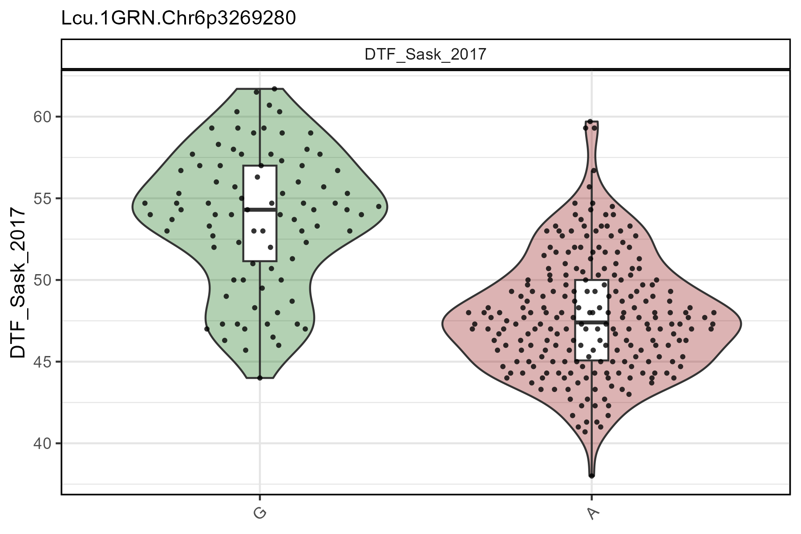
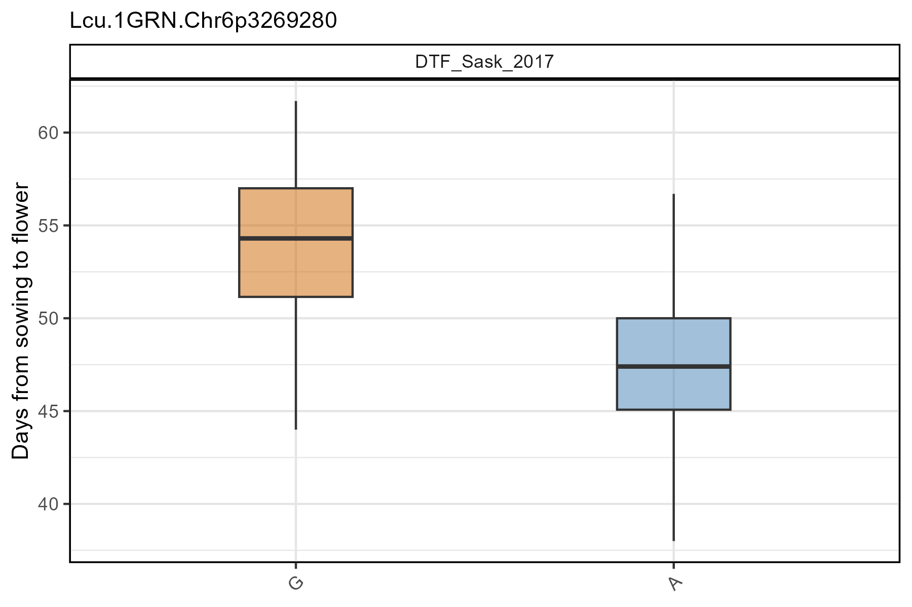
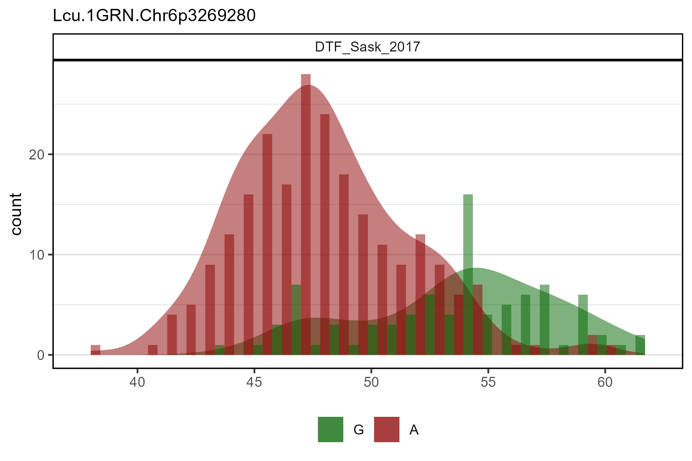
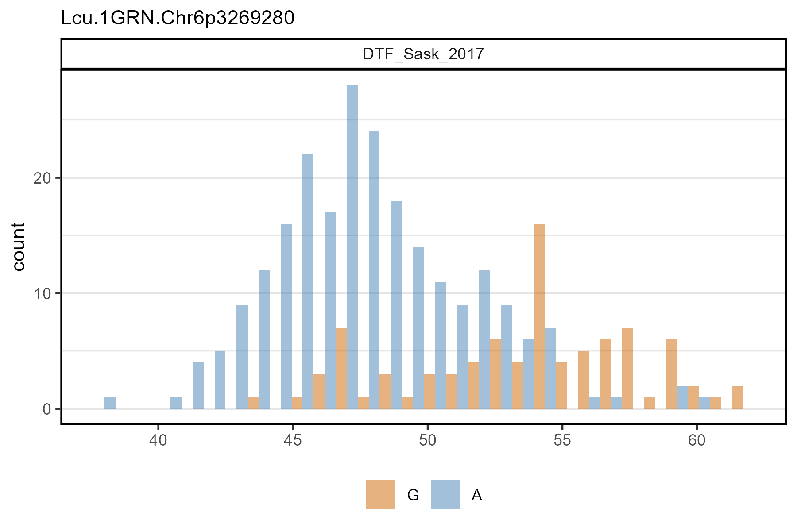
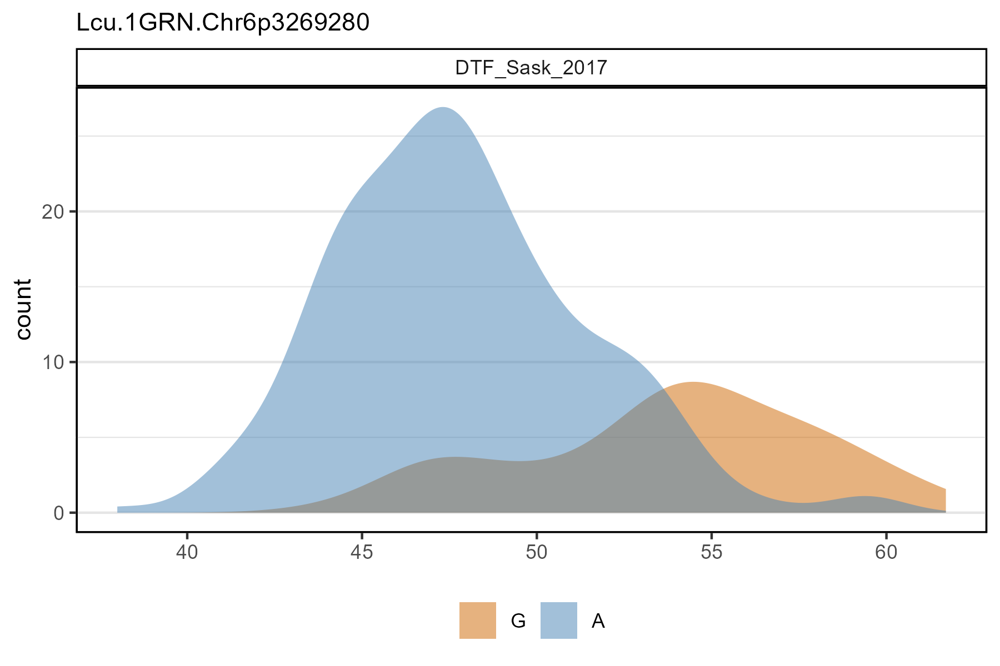
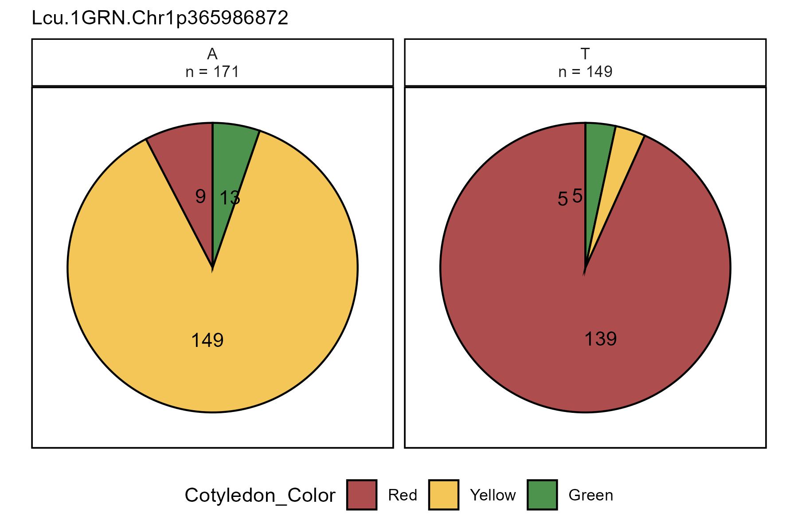

gg_Marker_*()
3.1_gg_Marker.RmdLoad data
gg_Marker_Box()
single marker, single trait
# Plot
mp <- gg_Marker_Box(xG = myG, xY = myY,
traits = "DTF_Sask_2017",
markers = "Lcu.1GRN.Chr6p3269280",
plot.points = F )
# Save
ggsave("figures/gg_Marker_Box_01.png", mp, width = 6, height = 4)
multiple markers, multiple traits
# Plot
mp <- gg_Marker_Box(xG = myG, xY = myY,
traits = c("DTF_Nepal_2017", "DTF_Sask_2017"),
markers = c("Lcu.1GRN.Chr5p1658484", "Lcu.1GRN.Chr2p44545877") )
# Save
ggsave("figures/gg_Marker_Box_02.png", mp, width = 8, height = 4)
gg_Marker_Bar()
# Plot
mp <- gg_Marker_Bar(xG = myG, xY = myY,
traits = c("DTF_Nepal_2017", "DTF_Sask_2017"),
markers = c("Lcu.1GRN.Chr2p44545877", "Lcu.1GRN.Chr5p1658484") )
# Save
ggsave("figures/gg_Marker_Bar_01.png", mp, width = 8, height = 4)
# Plot
mp <- gg_Marker_Bar(xG = myG, xY = myY,
traits = "Cotyledon_RedvsYellow",
markers = "Lcu.1GRN.Chr1p365986872",
plot.density = F )
# Save
ggsave("figures/gg_Marker_Bar_02.png", mp, width = 6, height = 4)
# Prep data
xx <- myY %>%
mutate(Cotyledon_Color = plyr::mapvalues(Cotyledon_RedvsYellow,
c(0,1,NA), c("Yellow","Red","Green")) )
# Plot
mp <- gg_Marker_Bar(xG = myG, xY = xx,
traits = "Cotyledon_Color",
markers = "Lcu.1GRN.Chr1p365986872",
plot.density = F )
# Save
ggsave("figures/gg_Marker_Bar_03.png", mp, width = 6, height = 4)
# Prep data
xx <- myY %>%
mutate(Cotyledon_Color = plyr::mapvalues(Cotyledon_RedvsYellow,
c(0,1,NA), c("Yellow","Red","Green")))
# Plot
mp <- gg_Marker_Pie(xG = myG, xY = xx,
trait = "Cotyledon_Color",
markers = "Lcu.1GRN.Chr1p365986872" )
# Save
ggsave("figures/gg_Marker_Pie_01.png", mp, width = 6, height = 4)